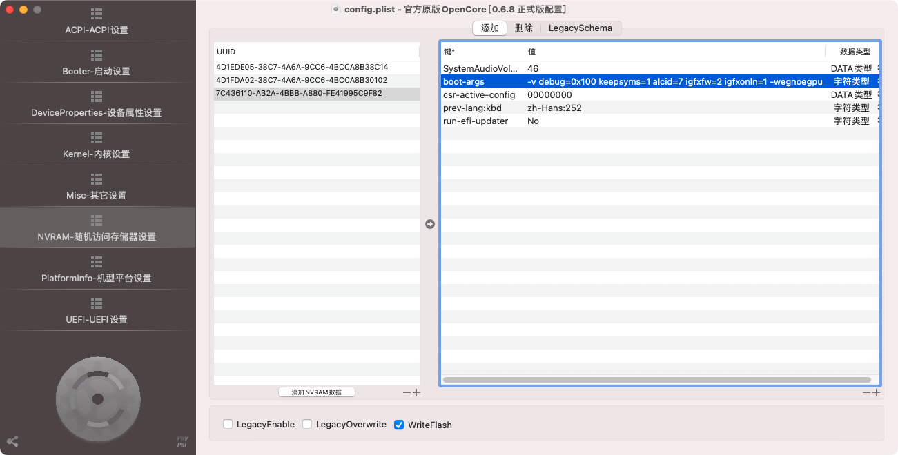

<!DOCTYPE html>
<html lang="zh-CN">
<head>
  <meta charset="UTF-8">
<meta name="viewport" content="width=device-width, initial-scale=1, maximum-scale=2">
<meta name="theme-color" content="#222">
<meta name="generator" content="Hexo 3.8.0">
  <link rel="apple-touch-icon" sizes="180x180" href="/images/icons/logo64.png">
  <link rel="icon" type="image/png" sizes="32x32" href="/images/icons/logo32.png">
  <link rel="icon" type="image/png" sizes="16x16" href="/images/icons/logo32.png">
  <link rel="mask-icon" href="/images/icons/logo200.png" color="#222">

<link rel="stylesheet" href="/css/main.css">


<link rel="stylesheet" href="/lib/font-awesome/css/font-awesome.min.css">


<script id="hexo-configurations">
  var NexT = window.NexT || {};
  var CONFIG = {
    root: '/',
    scheme: 'Gemini',
    version: '7.4.2',
    exturl: false,
    sidebar: {"position":"left","display":"post","offset":12,"onmobile":false},
    copycode: {"enable":true,"show_result":true,"style":null},
    back2top: {"enable":true,"sidebar":false,"scrollpercent":false},
    bookmark: {"enable":false,"color":"#222","save":"auto"},
    fancybox: false,
    mediumzoom: false,
    lazyload: false,
    pangu: false,
    algolia: {
      appID: '',
      apiKey: '',
      indexName: '',
      hits: {"per_page":10},
      labels: {"input_placeholder":"Search for Posts","hits_empty":"We didn't find any results for the search: ${query}","hits_stats":"${hits} results found in ${time} ms"}
    },
    localsearch: {"enable":false,"trigger":"auto","top_n_per_article":1,"unescape":false,"preload":false},
    path: '',
    motion: {"enable":true,"async":false,"transition":{"post_block":"fadeIn","post_header":"slideDownIn","post_body":"slideDownIn","coll_header":"slideLeftIn","sidebar":"slideUpIn"}},
    translation: {
      copy_button: '复制',
      copy_success: '复制成功',
      copy_failure: '复制失败'
    },
    sidebarPadding: 40
  };
</script>

  <meta name="description" content="前言看着Dock栏的图标一个个变成了正方形，软件慢慢开始不支持High Sierra系统，我也按耐不住想要升级系统了。但插在主板上的GTX1060告诉我，升级了系统之后就再也用不了它了，并且升级后的系统也不知道能不能正常使用。为了解决显卡这个问题，我去网上查了许多资料，研究了几种不同的解法，最终在不变动当前配置的情况下成功升级到Big Sur，Windows系统也毫无影响，付出的代价有2个：一是B">
<meta name="keywords" content="Hackintosh">
<meta property="og:type" content="article">
<meta property="og:title" content="从High Sierra升级到Big Sur">
<meta property="og:url" content="http://fisher.lazybone.xyz/从high-sierra升级到big-sur.html">
<meta property="og:site_name" content="Fisher&#39;s Blog">
<meta property="og:description" content="前言看着Dock栏的图标一个个变成了正方形，软件慢慢开始不支持High Sierra系统，我也按耐不住想要升级系统了。但插在主板上的GTX1060告诉我，升级了系统之后就再也用不了它了，并且升级后的系统也不知道能不能正常使用。为了解决显卡这个问题，我去网上查了许多资料，研究了几种不同的解法，最终在不变动当前配置的情况下成功升级到Big Sur，Windows系统也毫无影响，付出的代价有2个：一是B">
<meta property="og:locale" content="zh-CN">
<meta property="og:image" content="http://fisher.lazybone.xyz/images/hackintosh/bigsur_bios.png">
<meta property="og:image" content="http://fisher.lazybone.xyz/images/hackintosh/downloadimage.png">
<meta property="og:image" content="http://fisher.lazybone.xyz/images/hackintosh/ocdeviceproperties_update_bigsur.png">
<meta property="og:image" content="http://fisher.lazybone.xyz/images/hackintosh/ockernel_update_bigsur.png">
<meta property="og:image" content="http://fisher.lazybone.xyz/images/hackintosh/ocnvram_update_bigsur.png">
<meta property="og:image" content="http://fisher.lazybone.xyz/images/hackintosh/bigsur_update.png">
<meta property="og:image" content="http://fisher.lazybone.xyz/images/hackintosh/bigsur_version.png">
<meta property="og:updated_time" content="2021-05-30T09:26:28.584Z">
<meta name="twitter:card" content="summary">
<meta name="twitter:title" content="从High Sierra升级到Big Sur">
<meta name="twitter:description" content="前言看着Dock栏的图标一个个变成了正方形，软件慢慢开始不支持High Sierra系统，我也按耐不住想要升级系统了。但插在主板上的GTX1060告诉我，升级了系统之后就再也用不了它了，并且升级后的系统也不知道能不能正常使用。为了解决显卡这个问题，我去网上查了许多资料，研究了几种不同的解法，最终在不变动当前配置的情况下成功升级到Big Sur，Windows系统也毫无影响，付出的代价有2个：一是B">
<meta name="twitter:image" content="http://fisher.lazybone.xyz/images/hackintosh/bigsur_bios.png">

<link rel="canonical" href="http://fisher.lazybone.xyz/从high-sierra升级到big-sur.html">


<script id="page-configurations">
  // https://hexo.io/docs/variables.html
  CONFIG.page = {
    sidebar: "",
    isHome: false,
    isPost: true,
    isPage: false,
    isArchive: false
  };
</script>

  <title>从High Sierra升级到Big Sur | Fisher's Blog</title>
  
    <script async src="https://www.googletagmanager.com/gtag/js?id=UA-111555456-1"></script>
    <script>
      var host = window.location.hostname;
      if (host !== "localhost" || !true) {
        window.dataLayer = window.dataLayer || [];
        function gtag(){dataLayer.push(arguments);}
        gtag('js', new Date());
        gtag('config', 'UA-111555456-1');
      }
    </script>


  <noscript>
  <style>
  .use-motion .brand,
  .use-motion .menu-item,
  .sidebar-inner,
  .use-motion .post-block,
  .use-motion .pagination,
  .use-motion .comments,
  .use-motion .post-header,
  .use-motion .post-body,
  .use-motion .collection-header { opacity: initial; }

  .use-motion .site-title,
  .use-motion .site-subtitle {
    opacity: initial;
    top: initial;
  }

  .use-motion .logo-line-before i { left: initial; }
  .use-motion .logo-line-after i { right: initial; }
  </style>
</noscript>

</head>

<body itemscope itemtype="http://schema.org/WebPage">
  <div class="container use-motion">
    <div class="headband"></div>

    <header class="header" itemscope itemtype="http://schema.org/WPHeader">
      <div class="header-inner"><div class="site-brand-container">
  <div class="site-meta">

    <div>
      <a href="/" class="brand" rel="start">
        <span class="logo-line-before"><i></i></span>
        <span class="site-title">Fisher's Blog</span>
        <span class="logo-line-after"><i></i></span>
      </a>
    </div>
        <p class="site-subtitle">大都会に僕はもう一人で  投げ捨てられた空きカンのようだ</p>
  </div>

  <div class="site-nav-toggle">
    <div class="toggle" aria-label="切换导航栏">
      <span class="toggle-line toggle-line-first"></span>
      <span class="toggle-line toggle-line-middle"></span>
      <span class="toggle-line toggle-line-last"></span>
    </div>
  </div>
</div>


<nav class="site-nav">
  
  <ul id="menu" class="menu">
        <li class="menu-item menu-item-home">

    <a href="/" rel="section"><i class="fa fa-fw fa-home"></i>首页</a>

  </li>
        <li class="menu-item menu-item-about">

    <a href="/about/" rel="section"><i class="fa fa-fw fa-user"></i>关于</a>

  </li>
        <li class="menu-item menu-item-tags">

    <a href="/tags/" rel="section"><i class="fa fa-fw fa-tags"></i>标签</a>

  </li>
        <li class="menu-item menu-item-archives">

    <a href="/archives/" rel="section"><i class="fa fa-fw fa-archive"></i>归档</a>

  </li>
  </ul>

</nav>
</div>
    </header>

    
  <div class="back-to-top">
    <i class="fa fa-arrow-up"></i>
    <span>0%</span>
  </div>
  <div class="reading-progress-bar"></div>

  <a href="https://github.com/FisherWY" class="github-corner" title="Follow me on GitHub" aria-label="Follow me on GitHub" rel="noopener" target="_blank"><svg width="80" height="80" viewbox="0 0 250 250" aria-hidden="true"><path d="M0,0 L115,115 L130,115 L142,142 L250,250 L250,0 Z"/><path d="M128.3,109.0 C113.8,99.7 119.0,89.6 119.0,89.6 C122.0,82.7 120.5,78.6 120.5,78.6 C119.2,72.0 123.4,76.3 123.4,76.3 C127.3,80.9 125.5,87.3 125.5,87.3 C122.9,97.6 130.6,101.9 134.4,103.2" fill="currentColor" style="transform-origin: 130px 106px;" class="octo-arm"/><path d="M115.0,115.0 C114.9,115.1 118.7,116.5 119.8,115.4 L133.7,101.6 C136.9,99.2 139.9,98.4 142.2,98.6 C133.8,88.0 127.5,74.4 143.8,58.0 C148.5,53.4 154.0,51.2 159.7,51.0 C160.3,49.4 163.2,43.6 171.4,40.1 C171.4,40.1 176.1,42.5 178.8,56.2 C183.1,58.6 187.2,61.8 190.9,65.4 C194.5,69.0 197.7,73.2 200.1,77.6 C213.8,80.2 216.3,84.9 216.3,84.9 C212.7,93.1 206.9,96.0 205.4,96.6 C205.1,102.4 203.0,107.8 198.3,112.5 C181.9,128.9 168.3,122.5 157.7,114.1 C157.9,116.9 156.7,120.9 152.7,124.9 L141.0,136.5 C139.8,137.7 141.6,141.9 141.8,141.8 Z" fill="currentColor" class="octo-body"/></svg></a>


    <main class="main">
      <div class="main-inner">
        <div class="content-wrap">
          

          <div class="content">
            

  <div class="posts-expand">
      
  
  
  <article itemscope="" itemtype="http://schema.org/Article" class="post-block " lang="zh-CN">
    <link itemprop="mainEntityOfPage" href="http://fisher.lazybone.xyz/从high-sierra升级到big-sur.html">

    <span hidden itemprop="author" itemscope="" itemtype="http://schema.org/Person">
      <meta itemprop="image" content="/images/icons/avatar.jpg">
      <meta itemprop="name" content="Fisher">
      <meta itemprop="description" content="记录学习生活中的点滴">
    </span>

    <span hidden itemprop="publisher" itemscope="" itemtype="http://schema.org/Organization">
      <meta itemprop="name" content="Fisher's Blog">
    </span>
      <header class="post-header">
        <h1 class="post-title" itemprop="name headline">
          从High Sierra升级到Big Sur
        </h1>

        <div class="post-meta">
            <span class="post-meta-item">
              <span class="post-meta-item-icon">
                <i class="fa fa-calendar-o"></i>
              </span>
              <span class="post-meta-item-text">发表于</span>
              

              <time title="创建时间：2021-05-30 11:52:26 / 修改时间：17:26:28" itemprop="dateCreated datePublished" datetime="2021-05-30T11:52:26+08:00">2021-05-30</time>
            </span>

          
            <span id="/从high-sierra升级到big-sur.html" class="post-meta-item leancloud_visitors" data-flag-title="从High Sierra升级到Big Sur" title="阅读次数">
              <span class="post-meta-item-icon">
                <i class="fa fa-eye"></i>
              </span>
              <span class="post-meta-item-text">阅读次数：</span>
              <span class="leancloud-visitors-count"></span>
            </span>

        </div>
      </header>

    
    
    
    <div class="post-body" itemprop="articleBody">

      
        <h1 id="前言"><a href="#前言" class="headerlink" title="前言"></a>前言</h1><p>看着Dock栏的图标一个个变成了正方形，软件慢慢开始不支持High Sierra系统，我也按耐不住想要升级系统了。但插在主板上的GTX1060告诉我，升级了系统之后就再也用不了它了，并且升级后的系统也不知道能不能正常使用。为了解决显卡这个问题，我去网上查了许多资料，研究了几种不同的解法，最终在不变动当前配置的情况下成功升级到Big Sur，Windows系统也毫无影响，付出的代价有2个：一是Big Sur下GTX1060无法使用；二是需要频繁插拔HDMI线，想要切换到Windows系统并使用GTX1060，需要把HDMI线从板载HDMI口拔下并插到显卡HDMI口上。</p><a id="more"></a>
<h1 id="升级思路"><a href="#升级思路" class="headerlink" title="升级思路"></a>升级思路</h1><p>升级系统的思路主要有以下几种：</p>
<ul>
<li>只用集显的方法，这是最简单的一种方法了，把GTX1060拔了，舍弃独显，重新配置机型，全新安装Big Sur。这种方法最简单，但是Windows下只能用UHD630，游戏没法好好玩了。</li>
<li>显卡置换的方法，把GTX1060卖了之后换免驱的A卡，前一个星期我都在观察RX560和R9 Nano，想要入手一张。奈何是ITX机箱，A卡的ITX卡存量较少，价格较高，没舍得采用这种方案。</li>
<li>系统分开使用显卡的方法，在Big Sur中只用UHD630集显，在Windows中使用GTX1060。这种方法的好处是机器不需要对配置进行任何改动，但想要启动Windows打游戏的时候，需要把HDMI线插到独显上，想要启动Big Sur干活的时候，需要把HDMI线插到板载HDMI口上。</li>
</ul>
<p>最终，我使用了第三种方法，虽然频繁插拔HDMI线麻烦了一点，但是不需要花钱，也不需要动硬件，也算是一种比较省心的方法了。</p>
<h1 id="Bios设置"><a href="#Bios设置" class="headerlink" title="Bios设置"></a>Bios设置</h1><p>本次升级中，Bios设置主要集中在北桥中，设置如下：</p>
<ul>
<li>首选显卡：CPU Graphics</li>
<li>iGPU：Disable（启用后，主板会将板载和独显的HDMI口当成两个屏幕的输出，这样子就无法做输出区分了）</li>
<li>DVMT Pre-Allocated：128M（网上资料说：分配显存过小可能会出现花屏和黑屏，具体我没验证过）</li>
<li>RC6：Auto</li>
</ul>
<p></p>
<h1 id="系统下载"><a href="#系统下载" class="headerlink" title="系统下载"></a>系统下载</h1><p>由于百度云没会员实在是太慢了，我使用了<a href="https://github.com/munki/macadmin-scripts" target="_blank" rel="noopener">macadmin-scripts</a>脚本下载系统，该脚本的使用方法很简单，下载的镜像也是官方的纯净镜像。</p>
<ul>
<li>拉取仓库</li>
</ul>
<figure class="highlight shell"><table><tr><td class="gutter"><pre><span class="line">1</span><br><span class="line">2</span><br><span class="line">3</span><br></pre></td><td class="code"><pre><span class="line">cd ~/Desktop/</span><br><span class="line">git clone https://github.com/munki/macadmin-scripts.git</span><br><span class="line">cd macadmin-scripts/</span><br></pre></td></tr></table></figure>
<ul>
<li>以管理员身份运行脚本，如果提示缺少依赖，使用pip3安装对应依赖即可</li>
</ul>
<figure class="highlight shell"><table><tr><td class="gutter"><pre><span class="line">1</span><br></pre></td><td class="code"><pre><span class="line">sudo python3 ./installinstallmacos.py</span><br></pre></td></tr></table></figure>
<ul>
<li>在更新资源目录之后，脚本会询问想要下载哪个版本的镜像，这里我直接选择最新版的Big Sur，序号是18</li>
</ul>
<p></p>
<ul>
<li>接着脚本就会自动下载镜像，下载完成之后在文件夹中会自动生成一个dmg文件，该文件就是系统镜像了</li>
</ul>
<p>提示：如果下载过程中由于网络波动等原因导致下载失败，没有关系，重新运行脚本并选择相同的镜像序号，脚本会自动从下载失败的地方继续下载。</p>
<h1 id="OpenCore配置"><a href="#OpenCore配置" class="headerlink" title="OpenCore配置"></a>OpenCore配置</h1><p>这一步中，我们需要准备一个U盘，往里面放一份当前系统的EFI配置，然后进行修改。接下来的升级安装过程中全程使用这一份配置来引导系统。</p>
<p>由于之前的OpenCore配置文件中启用了独立显卡并指定为N卡，我们需要修改一下，将独显禁用并添加核显配置参数。如有需要，还要更换机型配置。（我从iMac18,2更换到Macmini8,1）</p>
<ul>
<li>首先是添加对集显的支持，我的集显是UHD630，添加的参数配置如下，其他型号的集显可以在各种黑苹果论坛查对应的键值</li>
</ul>
<figure class="highlight xml"><table><tr><td class="gutter"><pre><span class="line">1</span><br><span class="line">2</span><br><span class="line">3</span><br><span class="line">4</span><br><span class="line">5</span><br><span class="line">6</span><br><span class="line">7</span><br><span class="line">8</span><br><span class="line">9</span><br><span class="line">10</span><br><span class="line">11</span><br><span class="line">12</span><br><span class="line">13</span><br><span class="line">14</span><br><span class="line">15</span><br><span class="line">16</span><br><span class="line">17</span><br><span class="line">18</span><br><span class="line">19</span><br><span class="line">20</span><br><span class="line">21</span><br><span class="line">22</span><br><span class="line">23</span><br><span class="line">24</span><br><span class="line">25</span><br><span class="line">26</span><br><span class="line">27</span><br><span class="line">28</span><br><span class="line">29</span><br><span class="line">30</span><br><span class="line">31</span><br><span class="line">32</span><br><span class="line">33</span><br><span class="line">34</span><br><span class="line">35</span><br><span class="line">36</span><br><span class="line">37</span><br><span class="line">38</span><br><span class="line">39</span><br><span class="line">40</span><br><span class="line">41</span><br><span class="line">42</span><br><span class="line">43</span><br><span class="line">44</span><br><span class="line">45</span><br><span class="line">46</span><br><span class="line">47</span><br><span class="line">48</span><br><span class="line">49</span><br><span class="line">50</span><br><span class="line">51</span><br><span class="line">52</span><br><span class="line">53</span><br><span class="line">54</span><br><span class="line">55</span><br><span class="line">56</span><br><span class="line">57</span><br></pre></td><td class="code"><pre><span class="line"><span class="tag">&lt;<span class="name">key</span>&gt;</span>PciRoot(0x0)/Pci(0x2,0x0)<span class="tag">&lt;/<span class="name">key</span>&gt;</span></span><br><span class="line">    <span class="tag">&lt;<span class="name">dict</span>&gt;</span></span><br><span class="line">        <span class="tag">&lt;<span class="name">key</span>&gt;</span>AAPL,ig-platform-id<span class="tag">&lt;/<span class="name">key</span>&gt;</span></span><br><span class="line">        <span class="tag">&lt;<span class="name">data</span>&gt;</span>BwCbPg==<span class="tag">&lt;/<span class="name">data</span>&gt;</span></span><br><span class="line">        <span class="tag">&lt;<span class="name">key</span>&gt;</span>AAPL,slot-name<span class="tag">&lt;/<span class="name">key</span>&gt;</span></span><br><span class="line">        <span class="tag">&lt;<span class="name">string</span>&gt;</span>Internal@0,2,0<span class="tag">&lt;/<span class="name">string</span>&gt;</span></span><br><span class="line">        <span class="tag">&lt;<span class="name">key</span>&gt;</span>device-id<span class="tag">&lt;/<span class="name">key</span>&gt;</span></span><br><span class="line">        <span class="tag">&lt;<span class="name">data</span>&gt;</span>mz4AAA==<span class="tag">&lt;/<span class="name">data</span>&gt;</span></span><br><span class="line">        <span class="tag">&lt;<span class="name">key</span>&gt;</span>device_type<span class="tag">&lt;/<span class="name">key</span>&gt;</span></span><br><span class="line">        <span class="tag">&lt;<span class="name">string</span>&gt;</span>VGA compatible controller<span class="tag">&lt;/<span class="name">string</span>&gt;</span></span><br><span class="line">        <span class="tag">&lt;<span class="name">key</span>&gt;</span>dpcd-max-link-rate<span class="tag">&lt;/<span class="name">key</span>&gt;</span></span><br><span class="line">        <span class="tag">&lt;<span class="name">data</span>&gt;</span>FAAAAA==<span class="tag">&lt;/<span class="name">data</span>&gt;</span></span><br><span class="line">        <span class="tag">&lt;<span class="name">key</span>&gt;</span>enable-dpcd-max-link-rate-fix<span class="tag">&lt;/<span class="name">key</span>&gt;</span></span><br><span class="line">        <span class="tag">&lt;<span class="name">data</span>&gt;</span>AQAAAA==<span class="tag">&lt;/<span class="name">data</span>&gt;</span></span><br><span class="line">        <span class="tag">&lt;<span class="name">key</span>&gt;</span>enable-hdmi20<span class="tag">&lt;/<span class="name">key</span>&gt;</span></span><br><span class="line">        <span class="tag">&lt;<span class="name">data</span>&gt;</span>AQAAAA==<span class="tag">&lt;/<span class="name">data</span>&gt;</span></span><br><span class="line">        <span class="tag">&lt;<span class="name">key</span>&gt;</span>enable-lspcon-support<span class="tag">&lt;/<span class="name">key</span>&gt;</span></span><br><span class="line">        <span class="tag">&lt;<span class="name">data</span>&gt;</span>AQAAAA==<span class="tag">&lt;/<span class="name">data</span>&gt;</span></span><br><span class="line">        <span class="tag">&lt;<span class="name">key</span>&gt;</span>framebuffer-con0-busid<span class="tag">&lt;/<span class="name">key</span>&gt;</span></span><br><span class="line">        <span class="tag">&lt;<span class="name">data</span>&gt;</span>AgAAAA==<span class="tag">&lt;/<span class="name">data</span>&gt;</span></span><br><span class="line">        <span class="tag">&lt;<span class="name">key</span>&gt;</span>framebuffer-con0-enable<span class="tag">&lt;/<span class="name">key</span>&gt;</span></span><br><span class="line">        <span class="tag">&lt;<span class="name">data</span>&gt;</span>AQAAAA==<span class="tag">&lt;/<span class="name">data</span>&gt;</span></span><br><span class="line">        <span class="tag">&lt;<span class="name">key</span>&gt;</span>framebuffer-con0-has-lspcon<span class="tag">&lt;/<span class="name">key</span>&gt;</span></span><br><span class="line">        <span class="tag">&lt;<span class="name">data</span>&gt;</span>AQAAAA==<span class="tag">&lt;/<span class="name">data</span>&gt;</span></span><br><span class="line">        <span class="tag">&lt;<span class="name">key</span>&gt;</span>framebuffer-con0-index<span class="tag">&lt;/<span class="name">key</span>&gt;</span></span><br><span class="line">        <span class="tag">&lt;<span class="name">data</span>&gt;</span>AgAAAA==<span class="tag">&lt;/<span class="name">data</span>&gt;</span></span><br><span class="line">        <span class="tag">&lt;<span class="name">key</span>&gt;</span>framebuffer-con0-pipe<span class="tag">&lt;/<span class="name">key</span>&gt;</span></span><br><span class="line">        <span class="tag">&lt;<span class="name">data</span>&gt;</span>CgAAAA==<span class="tag">&lt;/<span class="name">data</span>&gt;</span></span><br><span class="line">        <span class="tag">&lt;<span class="name">key</span>&gt;</span>framebuffer-con0-type<span class="tag">&lt;/<span class="name">key</span>&gt;</span></span><br><span class="line">        <span class="tag">&lt;<span class="name">data</span>&gt;</span>AAgAAA==<span class="tag">&lt;/<span class="name">data</span>&gt;</span></span><br><span class="line">        <span class="tag">&lt;<span class="name">key</span>&gt;</span>framebuffer-con1-enable<span class="tag">&lt;/<span class="name">key</span>&gt;</span></span><br><span class="line">        <span class="tag">&lt;<span class="name">data</span>&gt;</span>AQAAAA==<span class="tag">&lt;/<span class="name">data</span>&gt;</span></span><br><span class="line">        <span class="tag">&lt;<span class="name">key</span>&gt;</span>framebuffer-con1-has-lspcon<span class="tag">&lt;/<span class="name">key</span>&gt;</span></span><br><span class="line">        <span class="tag">&lt;<span class="name">data</span>&gt;</span>AQAAAA==<span class="tag">&lt;/<span class="name">data</span>&gt;</span></span><br><span class="line">        <span class="tag">&lt;<span class="name">key</span>&gt;</span>framebuffer-con1-index<span class="tag">&lt;/<span class="name">key</span>&gt;</span></span><br><span class="line">        <span class="tag">&lt;<span class="name">data</span>&gt;</span>AwAAAA==<span class="tag">&lt;/<span class="name">data</span>&gt;</span></span><br><span class="line">        <span class="tag">&lt;<span class="name">key</span>&gt;</span>framebuffer-con1-pipe<span class="tag">&lt;/<span class="name">key</span>&gt;</span></span><br><span class="line">        <span class="tag">&lt;<span class="name">data</span>&gt;</span>CAAAAA==<span class="tag">&lt;/<span class="name">data</span>&gt;</span></span><br><span class="line">        <span class="tag">&lt;<span class="name">key</span>&gt;</span>framebuffer-con1-type<span class="tag">&lt;/<span class="name">key</span>&gt;</span></span><br><span class="line">        <span class="tag">&lt;<span class="name">data</span>&gt;</span>AAgAAA==<span class="tag">&lt;/<span class="name">data</span>&gt;</span></span><br><span class="line">        <span class="tag">&lt;<span class="name">key</span>&gt;</span>framebuffer-con2-busid<span class="tag">&lt;/<span class="name">key</span>&gt;</span></span><br><span class="line">        <span class="tag">&lt;<span class="name">data</span>&gt;</span>AQAAAA==<span class="tag">&lt;/<span class="name">data</span>&gt;</span></span><br><span class="line">        <span class="tag">&lt;<span class="name">key</span>&gt;</span>framebuffer-con2-enable<span class="tag">&lt;/<span class="name">key</span>&gt;</span></span><br><span class="line">        <span class="tag">&lt;<span class="name">data</span>&gt;</span>AQAAAA==<span class="tag">&lt;/<span class="name">data</span>&gt;</span></span><br><span class="line">        <span class="tag">&lt;<span class="name">key</span>&gt;</span>framebuffer-con2-index<span class="tag">&lt;/<span class="name">key</span>&gt;</span></span><br><span class="line">        <span class="tag">&lt;<span class="name">data</span>&gt;</span>AQAAAA==<span class="tag">&lt;/<span class="name">data</span>&gt;</span></span><br><span class="line">        <span class="tag">&lt;<span class="name">key</span>&gt;</span>framebuffer-con2-pipe<span class="tag">&lt;/<span class="name">key</span>&gt;</span></span><br><span class="line">        <span class="tag">&lt;<span class="name">data</span>&gt;</span>CQAAAA==<span class="tag">&lt;/<span class="name">data</span>&gt;</span></span><br><span class="line">        <span class="tag">&lt;<span class="name">key</span>&gt;</span>framebuffer-patch-enable<span class="tag">&lt;/<span class="name">key</span>&gt;</span></span><br><span class="line">        <span class="tag">&lt;<span class="name">data</span>&gt;</span>AQAAAA==<span class="tag">&lt;/<span class="name">data</span>&gt;</span></span><br><span class="line">        <span class="tag">&lt;<span class="name">key</span>&gt;</span>framebuffer-unifiedmem<span class="tag">&lt;/<span class="name">key</span>&gt;</span></span><br><span class="line">        <span class="tag">&lt;<span class="name">data</span>&gt;</span>AAAAgA==<span class="tag">&lt;/<span class="name">data</span>&gt;</span></span><br><span class="line">        <span class="tag">&lt;<span class="name">key</span>&gt;</span>hda-gfx<span class="tag">&lt;/<span class="name">key</span>&gt;</span></span><br><span class="line">        <span class="tag">&lt;<span class="name">string</span>&gt;</span>onboard-1<span class="tag">&lt;/<span class="name">string</span>&gt;</span></span><br><span class="line">        <span class="tag">&lt;<span class="name">key</span>&gt;</span>model<span class="tag">&lt;/<span class="name">key</span>&gt;</span></span><br><span class="line">        <span class="tag">&lt;<span class="name">string</span>&gt;</span>Intel UHD Graphics 630<span class="tag">&lt;/<span class="name">string</span>&gt;</span></span><br><span class="line">    <span class="tag">&lt;/<span class="name">dict</span>&gt;</span></span><br></pre></td></tr></table></figure>
<p>添加后的OC配置如下图所示</p>
<p></p>
<ul>
<li>接下来是禁用Intel网卡和蓝牙的驱动，因为不同系统版本有对应编译的驱动，升级完系统后还需要对这两个驱动升级，最后才能启用这两个驱动</li>
<li>同时，对于我的主板（Asus B360i），我还需要勾选<code>DisableRtcChecksum</code>，否则升级系统后每次开机主板都会进入安全模式</li>
</ul>
<p></p>
<ul>
<li>随后是启动参数的修改，清空之前的所有参数，填入以下参数：<ul>
<li><code>-v</code>：启动Debug模式，出问题时方便排查</li>
<li><code>debug=0x100</code>：显示更多的Debug信息</li>
<li><code>keepsyms=1</code>：出现问题后不自动重启，而是卡住并保持输出Debug信息</li>
<li><code>alcid=7</code>：声卡驱动ID注入</li>
<li><code>igfxfw=2</code>：使用核显启动</li>
<li><code>igfxonln=1</code>：修复视频线热插拔问题</li>
<li><code>-wegnoegpu</code>：禁用独立显卡</li>
</ul>
</li>
</ul>
<p></p>
<ul>
<li>最后是机型的修改（可选），由于我之前的机型参数<code>iMac18,2</code>使用的是7代酷睿，因此在Hackintool中CPU架构显示为<code>???</code>。本次升级顺带将机型参数也更换掉，更换为配置更接近的<code>Macmini8,1</code></li>
<li>具体操作在OCC的PlatformInfo中选择对应机型，检查序列号，确定该序列号无效后即可</li>
</ul>
<h1 id="系统更新"><a href="#系统更新" class="headerlink" title="系统更新"></a>系统更新</h1><p>本次升级中，我曾尝试制作U盘启动盘，然后从<code>安装Big Sur</code>中启动并升级系统，但是升级到一大半就会提示该镜像已损坏，请重新下载的提醒。没办法，我只好放弃从U盘启动盘中升级系统。</p>
<p>随后我在硬盘EFI中删除<code>nvda_drv=1</code>，添加<code>-wegnoegpu</code>参数禁用独立显卡，将HDMI线接到板载HDMI接口，启动系统，此时系统是没有显卡驱动的。直接双击打开镜像然后点击升级，当系统自动重启时，转成使用U盘EFI进行引导，并在随后的启动中都使用U盘EFI进行引导。没想到这种方法居然升级成功了，因为不确定是否会成功，所以没有拍什么图片，只有下面这一张。</p>
<p></p>
<p>值得注意的是，刚刚升级成功后电脑非常的卡，以至于在系统初始化设置界面，每点一次下一步都要等很久，这是正常现象，慢慢等就好了。</p>
<h1 id="完成升级"><a href="#完成升级" class="headerlink" title="完成升级"></a>完成升级</h1><p>进入系统之后，首先提醒的是N卡的WebDriver不再使用于本系统，直接卸载就可以了。</p>
<p>接下来更新驱动，把OC中能更新的驱动全部更新，注意Intel的Wi-Fi和蓝牙驱动要下载Big Sur版本的，在配置文件中重新勾选启用这两个驱动，保存重启测试，确认能够正常启动之后，我们就可以将新版的EFI从U盘覆盖到硬盘中了。</p>
<p>注意：这次升级之后我还遇到了一个问题是USB驱动问题，刚开机的时候鼠标和键盘非常卡，并且蓝牙驱动不会加载，这很明显就是USB定制驱动的问题，需要重新定制一次。重新定制之后，蓝牙驱动能够正常加载了，但是开机速度慢了很多，通过Debug的日志可以看到，蓝牙驱动一直在循环等待<code>IO USB Controller</code>这个控制器启动，而这个控制器的启动速度慢的离谱，具体解决方案目前还没有。如果你知道这个问题的解决方法，请在<a href="https://github.com/FisherWY/Asus-B360i-Hackintosh-EFI" target="_blank" rel="noopener">我的仓库</a>中提issue，非常感谢。</p>
<p>至此，一次系统的升级终于完成，可以开始好好体验Big Sur的新功能了。</p>
<p></p>

    </div>

    
    
    

      <footer class="post-footer">
          <div class="post-tags">
              <a href="/tags/hackintosh/" rel="tag"># Hackintosh</a>
          </div>

        

          <div class="post-nav">
            <div class="post-nav-next post-nav-item">
                <a href="/从clover迁移到opencore.html" rel="next" title="从Clover迁移到OpenCore">
                  <i class="fa fa-chevron-left"></i> 从Clover迁移到OpenCore
                </a>
            </div>

            <span class="post-nav-divider"></span>

            <div class="post-nav-prev post-nav-item">
                <a href="/scnu校园网ipv6配置.html" rel="prev" title="SCNU校园网IPv6配置">
                  SCNU校园网IPv6配置 <i class="fa fa-chevron-right"></i>
                </a>
            </div>
          </div>
      </footer>
    
  </article>
  
  
  

  </div>


          </div>
          

        </div>
          
  
  <div class="toggle sidebar-toggle">
    <span class="toggle-line toggle-line-first"></span>
    <span class="toggle-line toggle-line-middle"></span>
    <span class="toggle-line toggle-line-last"></span>
  </div>

  <aside class="sidebar">
    <div class="sidebar-inner">

      <ul class="sidebar-nav motion-element">
        <li class="sidebar-nav-toc">
          文章目录
        </li>
        <li class="sidebar-nav-overview">
          站点概览
        </li>
      </ul>

      <!--noindex-->
      <div class="post-toc-wrap sidebar-panel">
          <div class="post-toc motion-element"><ol class="nav"><li class="nav-item nav-level-1"><a class="nav-link" href="#前言"><span class="nav-number">1.</span> <span class="nav-text">前言</span></a></li><li class="nav-item nav-level-1"><a class="nav-link" href="#升级思路"><span class="nav-number">2.</span> <span class="nav-text">升级思路</span></a></li><li class="nav-item nav-level-1"><a class="nav-link" href="#Bios设置"><span class="nav-number">3.</span> <span class="nav-text">Bios设置</span></a></li><li class="nav-item nav-level-1"><a class="nav-link" href="#系统下载"><span class="nav-number">4.</span> <span class="nav-text">系统下载</span></a></li><li class="nav-item nav-level-1"><a class="nav-link" href="#OpenCore配置"><span class="nav-number">5.</span> <span class="nav-text">OpenCore配置</span></a></li><li class="nav-item nav-level-1"><a class="nav-link" href="#系统更新"><span class="nav-number">6.</span> <span class="nav-text">系统更新</span></a></li><li class="nav-item nav-level-1"><a class="nav-link" href="#完成升级"><span class="nav-number">7.</span> <span class="nav-text">完成升级</span></a></li></ol></div>
      </div>
      <!--/noindex-->

      <div class="site-overview-wrap sidebar-panel">
        <div class="site-author motion-element" itemprop="author" itemscope="" itemtype="http://schema.org/Person">
  
  <p class="site-author-name" itemprop="name">Fisher</p>
  <div class="site-description" itemprop="description">记录学习生活中的点滴</div>
</div>
<div class="site-state-wrap motion-element">
  <nav class="site-state">
      <div class="site-state-item site-state-posts">
          <a href="/archives/">
        
          <span class="site-state-item-count">86</span>
          <span class="site-state-item-name">日志</span>
        </a>
      </div>
      <div class="site-state-item site-state-tags">
            <a href="/tags/">
          
        <span class="site-state-item-count">17</span>
        <span class="site-state-item-name">标签</span></a>
      </div>
  </nav>
</div>
  <div class="links-of-author motion-element">
      <span class="links-of-author-item">
        <a href="https://github.com/FisherWY" title="GitHub &rarr; https://github.com/FisherWY" rel="noopener" target="_blank"><i class="fa fa-fw fa-github"></i>GitHub</a>
      </span>
      <span class="links-of-author-item">
        <a href="mailto:wz1146923421@live.com" title="E-Mail &rarr; mailto:wz1146923421@live.com" rel="noopener" target="_blank"><i class="fa fa-fw fa-envelope"></i>E-Mail</a>
      </span>
  </div>


      </div>

    </div>
  </aside>
  <div id="sidebar-dimmer"></div>


      </div>
    </main>

    <footer class="footer">
      <div class="footer-inner">
        

<div class="copyright">
  
  &copy; 
  <span itemprop="copyrightYear">2021</span>
  <span class="with-love">
    <i class="fa fa-user"></i>
  </span>
  <span class="author" itemprop="copyrightHolder">Fisher</span>
</div>
  <div class="powered-by">由 <a href="https://hexo.io" class="theme-link" rel="noopener" target="_blank">Hexo</a> 强力驱动 v3.8.0
  </div>
  <span class="post-meta-divider">|</span>
  <div class="theme-info">主题 – <a href="https://theme-next.org" class="theme-link" rel="noopener" target="_blank">NexT.Gemini</a> v7.4.2
  </div>

        


  <script>
  function leancloudSelector(url) {
    return document.getElementById(url).querySelector('.leancloud-visitors-count');
  }
  if (CONFIG.page.isPost) {
    function addCount(Counter) {
      var visitors = document.querySelector('.leancloud_visitors');
      var url = visitors.getAttribute('id').trim();
      var title = visitors.getAttribute('data-flag-title').trim();

      Counter('get', `/classes/Counter?where=${JSON.stringify({ url })}`)
        .then(response => response.json())
        .then(({ results }) => {
          if (results.length > 0) {
            var counter = results[0];
            Counter('put', '/classes/Counter/' + counter.objectId, { time: { '__op': 'Increment', 'amount': 1 } })
              .then(response => response.json())
              .then(() => {
                leancloudSelector(url).innerText = counter.time + 1;
              })
              .catch(error => {
                console.log('Failed to save visitor count', error);
              })
          } else {
              leancloudSelector(url).innerText = 'Counter not initialized! More info at console err msg.';
              console.error('ATTENTION! LeanCloud counter has security bug, see how to solve it here: https://github.com/theme-next/hexo-leancloud-counter-security. \n However, you can still use LeanCloud without security, by setting `security` option to `false`.');
            
          }
        })
        .catch(error => {
          console.log('LeanCloud Counter Error', error);
        });
    }
  } else {
    function showTime(Counter) {
      var visitors = document.querySelectorAll('.leancloud_visitors');
      var entries = [...visitors].map(element => {
        return element.getAttribute('id').trim();
      });

      Counter('get', `/classes/Counter?where=${JSON.stringify({ url: { '$in': entries } })}`)
        .then(response => response.json())
        .then(({ results }) => {
          if (results.length === 0) {
            document.querySelectorAll('.leancloud_visitors .leancloud-visitors-count').forEach(element => {
              element.innerText = 0;
            });
            return;
          }
          for (var i = 0; i < results.length; i++) {
            var item = results[i];
            var url = item.url;
            var time = item.time;
            leancloudSelector(url).innerText = time;
          }
          for (var i = 0; i < entries.length; i++) {
            var url = entries[i];
            var element = leancloudSelector(url);
            if (element.innerText == '') {
              element.innerText = 0;
            }
          }
        })
        .catch(error => {
          console.log('LeanCloud Counter Error', error);
        });
    }
  }

  fetch('https://app-router.leancloud.cn/2/route?appId=l8bvleb0PFB0er4hTWo3bGL1-gzGzoHsz')
    .then(response => response.json())
    .then(({ api_server }) => {
      var Counter = (method, url, data) => {
        return fetch(`https://${api_server}/1.1${url}`, {
          method: method,
          headers: {
            'X-LC-Id': 'l8bvleb0PFB0er4hTWo3bGL1-gzGzoHsz',
            'X-LC-Key': 'vOPowrKK83zOB6LhLKYOsGd1',
            'Content-Type': 'application/json',
          },
          body: JSON.stringify(data)
        });
      };
      if (CONFIG.page.isPost) {
        const localhost = /http:\/\/(localhost|127.0.0.1|0.0.0.0)/;
        if (localhost.test(document.URL)) return;
        addCount(Counter);
      } else if (document.querySelectorAll('.post-title-link').length >= 1) {
        showTime(Counter);
      }
    });
  </script>


        
      </div>
    </footer>
  </div>

  
  <script src="/lib/anime.min.js"></script>
  <script src="/lib/velocity/velocity.min.js"></script>
  <script src="/lib/velocity/velocity.ui.min.js"></script>
<script src="/js/utils.js"></script><script src="/js/motion.js"></script>
<script src="/js/schemes/pisces.js"></script>
<script src="/js/next-boot.js"></script>


  
  <script>
    (function(){
      var bp = document.createElement('script');
      var curProtocol = window.location.protocol.split(':')[0];
      bp.src = (curProtocol === 'https') ? 'https://zz.bdstatic.com/linksubmit/push.js' : 'http://push.zhanzhang.baidu.com/push.js';
      var s = document.getElementsByTagName("script")[0];
      s.parentNode.insertBefore(bp, s);
    })();
  </script>


  

  

<script src="/live2dw/lib/L2Dwidget.min.js?0c58a1486de42ac6cc1c59c7d98ae887"></script><script>L2Dwidget.init({"pluginRootPath":"live2dw/","pluginJsPath":"lib/","pluginModelPath":"assets/","tagMode":false,"debug":false,"display":{"position":"left","width":75,"height":150},"model":{"jsonPath":"/live2dw/assets/koharu.model.json"},"mobile":{"show":false},"log":false});</script></body>
</html>
